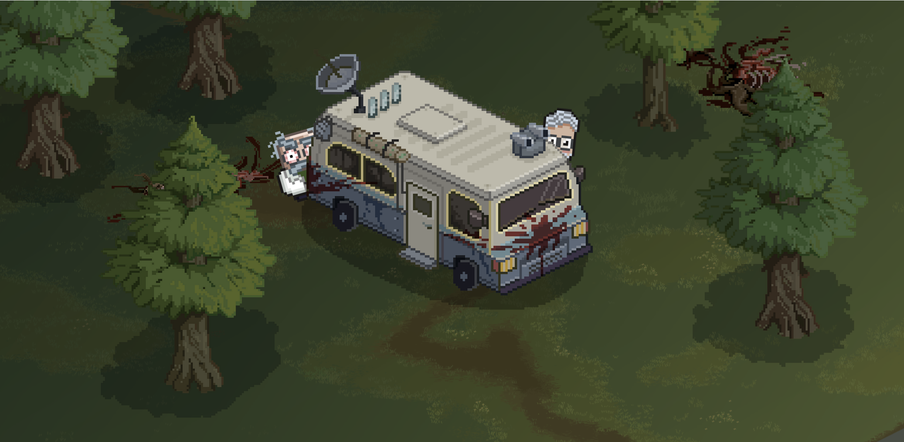
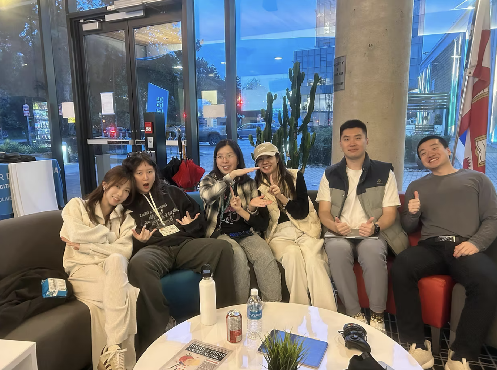
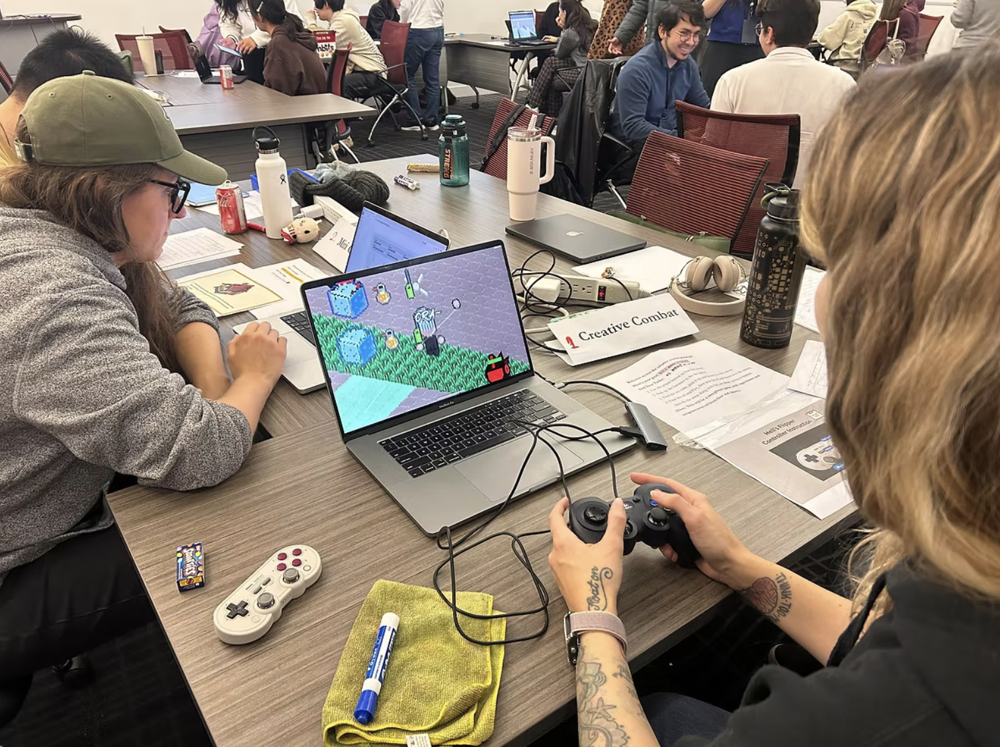

Biochem 101
A two player cooperative action game built around chemistry and teamwork, developed by Team Fennec over four months.
Project Introduction
Biochem 101 is a two player cooperative action game developed by Team Fennec over four months. Players take on the roles of a reckless Mad Scientist and a disciplined Government Agent as they fight through a laboratory where every experiment has turned hostile.
The game combines action combat with chemistry based reactions, improvised weapons, and cooperative lab minigames. As the team's sole Project Manager, I managed planning, scope, team coordination, playtest driven iteration, and delivery across a multidisciplinary student team.

Mad Scientist and Government Agent in the laboratory
Role & Responsibilities
Sole PM across a six-person team of artists, developers, and designers. My focus was achievable scope, cross-discipline visibility, and keeping production on track over four months.
Production and Scope Management
Roadmap, milestones, and ClickUp backlog. Scope adjusted regularly against team capacity and remaining timeline. Kept focus on the core cooperative experience over lower impact additions.
Team and Cross Discipline Coordination
Planning sessions, stand-ups, and progress reviews. Tracked ownership, blockers, and dependencies across art, design, and development. Kept priority decisions connected to shared project goals.
Testing and Iteration
Planned playtests and organized findings into clear themes. Translated useful feedback into production tasks. Balanced iteration against time and production risk.

Team Fennec
Production Journey
Define the Cooperative Experience
Project kickoff
Helped the team define the core cooperative loop, clarify the project direction, and turn the early concept into a manageable production plan.
Break the Game into Achievable Work
Production setup
Built the ClickUp structure, organized priorities, identified dependencies, and translated major features into achievable tasks alongside other academic responsibilities.
Manage Production Across Disciplines
Active development
Maintained visibility across disciplines, tracked blockers, clarified ownership, and kept communication tied to the production plan as dependencies increased.
Test and Adjust the Experience
Playtesting and iteration
Organized feedback into production priorities and helped the team focus on the changes that would create the most value within the remaining time.
Refine and Complete the Game
Final delivery
Protected final scope, coordinated remaining dependencies, and kept the team focused on strengthening the core cooperative experience rather than adding new ideas.


Playtesting sessions
Challenge → Response → Current Outcome
A six-person student team building a complete cooperative game in four months while managing other coursework. My job was to keep scope realistic, maintain cross-discipline alignment, and guide iteration without losing delivery.
Managing Scope and Workload
An ambitious concept with multiple systems, characters, environments, and art assets — alongside other academic responsibilities reducing available capacity.
Regularly reviewed backlog, timeline, and workload. Prioritized features by value to the core experience; simplified or cut the rest when capacity shifted.
The team stayed on a playable, achievable scope and delivered a cohesive experience built around what mattered most.
Aligning Art, Design, and Development
Art, design, and development often approached the same feature from different angles — a creative idea wasn't always feasible, and a working system didn't always feel right to play.
Defined clearer ownership, task specs, and acceptance expectations before work started. Tracked dependencies in ClickUp so disciplines could plan around each other.
Better shared understanding of requirements reduced rework and improved coordination across art, design, and development.
Turning Playtest Feedback into Production Decisions
Playtests surfaced feedback across controls, combat, cooperation, and pacing — more than the team could address in the remaining timeline.
Organized findings into themes and evaluated each by player impact, frequency, effort, and risk. Useful feedback became tasks; lower-priority ideas stayed documented.
Playtesting became a focused decision-making tool. Iteration was targeted, improving the experience without disrupting delivery.
What I Carry Forward
01
Scope Reflects Real Capacity
A plan only works when it reflects actual capacity. I connect scope decisions to workload and timeline, and adjust when either changes.
02
Alignment Requires Shared Context
Cross-discipline teams work better with shared context — not just what they're building, but why and what depends on it. Clear ownership and visible dependencies reduce friction.
03
Feedback Must Support Decisions
Feedback has to be evaluated before it becomes work. I assess findings by player impact, effort, and risk before committing anything to production.